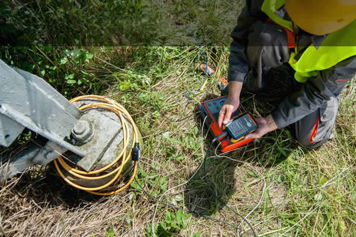
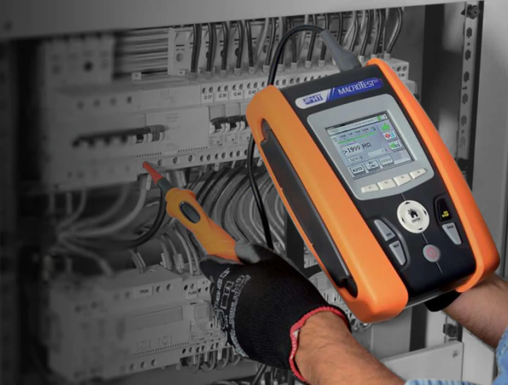

Consorcios
Medición anual para contar con documentación vigente ante la administración y un eventual siniestro eléctrico.
Seguridad eléctrica documentada
Protocolo SRT 900/2015 para verificar la puesta a tierra, la continuidad de las masas y la actuación de los dispositivos diferenciales en instalaciones laborales.


El protocolo SRT 900/2015 verifica las condiciones de seguridad eléctrica frente al riesgo de contacto indirecto en ámbitos laborales y consorcios.
Realizamos la medición de la resistencia de puesta a tierra, la continuidad de las masas y la prueba de actuación de interruptores diferenciales o disyuntores.
La medición vigente ayuda a respaldar la operación, la habilitación y la prevención de riesgos eléctricos.
Medición anual para contar con documentación vigente ante la administración y un eventual siniestro eléctrico.
Certificación eléctrica con respaldo técnico para operaciones de alquiler o venta de inmuebles.
Documentación para acompañar habilitaciones comerciales, especialmente en locales con alta carga.
Control de la instalación eléctrica y cumplimiento documental para proteger a las personas.
El incumplimiento de la Resolución SRT 900/2015 puede derivar en sanciones para empresas y consorcios con ambientes laborales.
Sin certificado vigente, una aseguradora puede cuestionar la cobertura ante un siniestro eléctrico, según las condiciones de la póliza.
Una puesta a tierra deficiente puede aumentar la exposición a tensiones peligrosas, electrocución e incendios.
Coordinamos una visita accesible y realizamos el estudio en un solo acto, con criterios definidos desde el inicio.
Definimos fecha, lugar y puntos de medición accesibles, ubicados a no más de 2,10 metros de NPT.
Trabajamos con analizadores multifunción calibrados y verificamos puesta a tierra, masas y diferenciales.
Preparamos el informe con valores, observaciones, protocolo y certificación conforme SRT 900/2015.
Servicio para CABA y GBA. La coordinación y el alcance final se confirman según la instalación y los puntos a medir.
Verifica el valor de la puesta a tierra, la continuidad de las masas con el circuito de tierra y la actuación de los dispositivos de protección, como los interruptores diferenciales.
Puede corresponder a un disyuntor, una jabalina, un tablero, un tomacorriente, un motor, una máquina eléctrica o una bandeja portacable.
Se entrega el informe con la tabla de valores, comentarios sobre anomalías, resultados de la prueba de diferenciales, protocolo y certificación correspondiente.
La propuesta está orientada a instalaciones ubicadas en CABA y Gran Buenos Aires. El alcance se confirma al coordinar la visita.
Contanos qué tipo de instalación tenés y te orientamos sobre el alcance del estudio y la documentación que corresponde.
Hablar por WhatsApp